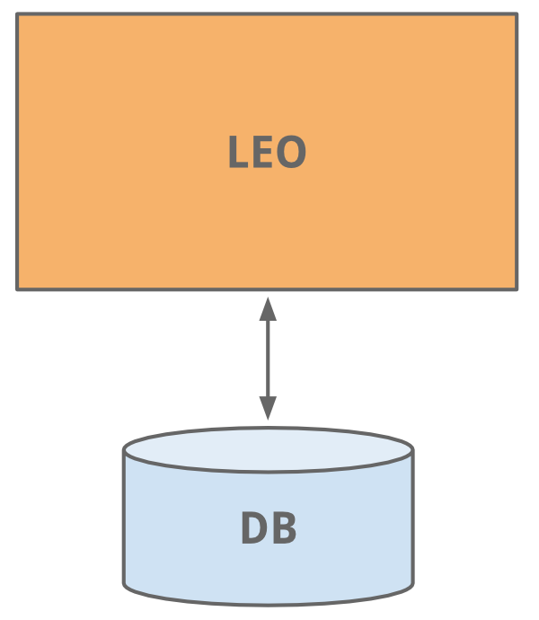
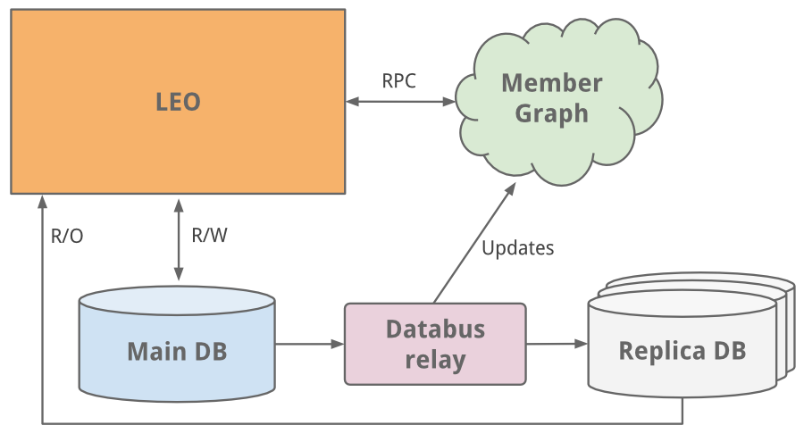
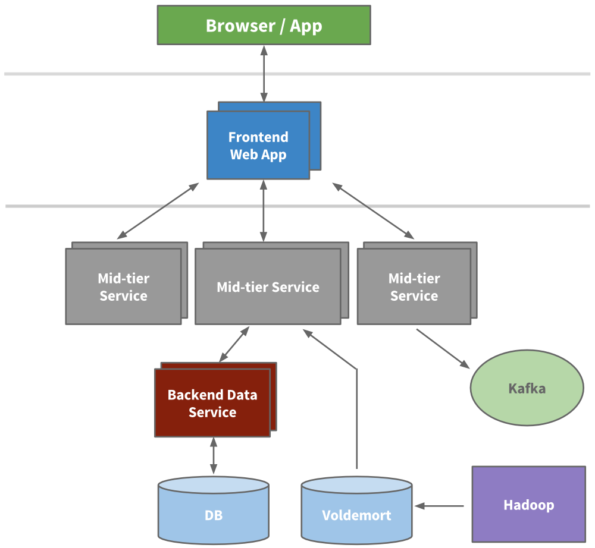
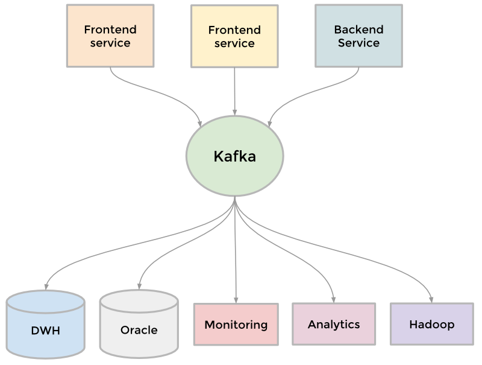
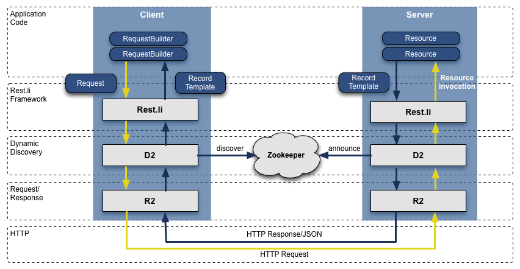
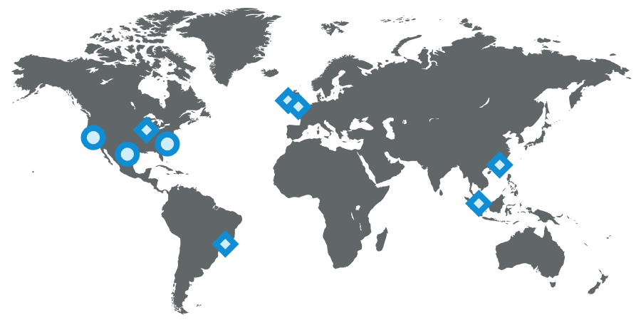

原文： A Brief History of Scaling LinkedIn
Josh Clemm是LinkedIn的高级工程经理，自2011年加入LinkedIn。他最近(2015/07/20)写了一篇文章，介绍了LinkedIn针对用户规模急速扩大带来的架构方面的变革。
文章有点像子柳写的淘宝技术这十年
2003年是LinkedIn元年，公司成立的目标是连接你的个人人脉以获得更好的的工作机会。上线第一周才有2700个会员注册，时光飞梭，LinkedIn的产品、会员数量、服务器负载都极大的增长了。
今天，LinkedIn全球用户已经超过3.5亿。我们每秒有数十万个页面被访问，移动端流量已占到50%以上 (mobile moment)。所有这些请求都从后台获取数据，而我们的后台系统可以处理每秒上百万次查询。
问题来了： 所有这些是怎么做到的呢？
早期
Leo
和现在很多站点开始的时候一样， LinkedIn使用一个应用程序做所有的工作。 这个应用程序被称之为 "Leo"。它包含所有的Java Servlet页面， 处理业务逻辑， 连接少量的LinkedIn数据库。

Member Graph (会员关系图)
开始的工作之一就是管理会员之间关系的社交网络。我们需要一个系统通过图遍历(graph traversals)的方式来查询关系数据， 同时需要将数据驻留内存以便获得高效和性能。从这个不同的使用特征来看， 很明显这需要一个独立于Leo的系统以方便扩大规模，于是一个叫做"Clould"专门用于会员关系图(member graph)的独立系统诞生了。这是LinkedIn的第一个服务系统。为了和Leo系统分离，我们使用Java RPC来进行通讯。
也大约在此期间我们需要增加搜索服务的能力。我们的会员关系图服务也提供数据给一个基于Lucene的搜索服务。
Replica read DBs (多个只读数据库副本)
随着站点的增长， Leo系统也在扩大， 增加了更多的角色和职能， 也更加复杂。 通过负载均衡可以运行多个Leo实例，但是新增的负载也影响到LinkedIn的最关键系统-会员信息数据库。
一个最容易的解决方案就是垂直扩展 - 在其上增加更多的CPU和内存。这虽然可以支撑一段时间，但是将来我们还是会遇到规模扩展的问题。会员信息数据库既处理读又处理写。 为了扩展，我们引入了复制从库(replica slave DB)。 复制数据库是会员数据库的一个拷贝， 使用 databus (现已开源)的最早版本来进行同步。这些复制从库处理所有的读请求， 并且增加了保证主库和从库数据一致性的逻辑。

当站点遇到越来越多的流量时，单一的Leo系统经常宕机，而且很难排查和恢复， 发布新代码也很困难。 高可用性对LinkedIn至关重要， 很明显我们需要"干掉" Leo， 把它分解成多个小的功能模块和无状态的服务。
Service Oriented Architecture (面向服务的架构)
工程师开始抽取出一些微服务， 这些微服务提供API和一些业务逻辑， 如搜索，会员信息， 通讯和群组平台。接着我们的表现层也被抽取出来了，比如招聘产品和公共信息页。新产品，新服务都独立于Leo。 不久，各个功能区的垂直栈完成了。
我们构建了前端服务器， 可以从不同的域获取数据，处理展示逻辑以及生成HTML (通过JSP)。我们还构建了中间层服务提供API接口访问数据模型以及提供数据库一致性访问后端数据服务。到2010年，我们已经有超过150个独立的服务，而今天，我们已经有超过750个服务。

因为无状态， 规模扩展可以通过堆叠任意服务的新实例以及在它们之间进行负载均衡来完成。我们给每个服务设定了警戒红线， 知道它的负载能力， 提供早期预警和性能监控。
cache (缓存)
LinkedIn可预见的增长促使我们要进一步的扩展。我们知道通过添加更多的缓存层以减少负载压力。很多应用开始引入中间缓存层如 memecached 或者 couchbase。 我们还在数据层增加了缓存， 并且在适当的时候使用 Voldemort 提供预先计算的结果。
之后，我们实际上去掉了中间缓存层。中间缓存层存储来自多个域的数据。虽然开始时缓存看起来是减少压力的一种简单方式，但是缓存数据失效的复杂性和调用图(call graph)变得无法控制。将缓存更可能地接近数据层可以降低延迟， 使我们可以水平扩展，降低可知的负载(cognitive load)。
Kafka
为了收集日益增长的数据，LinkedIn开发了很多定制的数据通道来流水化和队列化数据(streaming and queueing)。 比如， 我们需要将数据放入数据仓库，我们需要将一批数据放入Hadoop工作流以便分析，我们从每个服务中中聚合了大量日志， 我们收集了很多用户追踪事件如页面点击， 我们需要队列化inMail消息系统中的数据， 我们需要保证用户更新完个人信息后搜索数据也是最新的等等。
随着网站还在壮大，更多的定制管道出现了。 因为网站规模需要扩展，每一个独立的管道也需要扩展， 有些东西不得不放弃。 结果就是Kafka开发出来了， 它是我们的分布式的发布订阅消息系统。Kafka成为一个统一的管道， 根据commit log的概念构建, 特别注重速度和扩展性。 它可以接近实时的访问数据源，驱动Hadoop任务， 允许我们构建实时的分析，广泛地提升了我们的站点监控和报警能力， 也使我们能够可视化和跟踪调用图(call graph)。 今天， Kafka
每天处理超过5千亿的事件。

Inversion(反转)
扩展可以从很多维度来衡量，包括组织结构。 在2011年底， LinkedIn开始了一个内部创新，叫 “反转” (Inversion)。我们暂停了新功能的开发， 允许整个工程部门专注于提升工具，部署，基础架构和开发者生产力上。它成功地使我们可以敏捷地建立可扩展性新产品。
近几年
Rest.li
当我们从Leao转向面向服务的架构后，之前抽取的基于Java RPC的API, 在团队中开始变得不一致了，和表现层耦合太紧，这只会变得更糟。为了解决这个问题， 我们开发了一个新的API模型，叫做 Rest.li. Rest.li 符合我们面向数据模型的架构， 确保在整个公司提供一致性的无状态的Restful API模型。
基于HTTP的JSON数据， 我们新的API最终很容易地编写非Java的客户端。 LinkedIn今天仍然主要使用Java栈，但是也有很多使用Python, Ruby, Node.js 和 C++的客户端，可能是自己开发的或者收购过来的。 脱离了RPC也让我们将变现层和后端兼容型的问题中挣脱出来。另外， 使用Dynamic Discovery (D2)的Rest.li, 我们可以得到自动的基于负载均衡，服务发现和可扩展的API客户端。
今天， LinkedIn有975 个Rest.li资源， 所有的数据中心每天有超过一千亿级Rest.li调用。

Super Blocks (超级块)
面向服务的架构很好的解耦了域之间的联系和可以独立地扩展服务。但是也有缺点， 很多应用获取各种类型的不同的数据， f(call graph)或者叫做"扇出" (fanout)。例如， 任意一次个人信息页的请求就会获取照片，会员关系， 组，订阅信息， 关注，博客，人脉，推荐等信息。 这个调用图很难管理，而且越来越难控制。
我们引入了超级块的概念。 为一组后台服务提供一个单一的访问API。这样我们就可以有一个team专门优化这个块，同时保证每个客户端的调用图可控。
Multi-Data Center (多数据中心)
作为一个会员快速增长的全球化公司，我们需要从一个数据中心进行扩展，我们通过几年的努力来解决这个问题，首先，从两个数据中心（洛杉矶 和 芝加哥）提供了公共个人信息，证明可行后，我们开始增强服务来处理数据复制、不同源的调用、单向数据复制事件、将用户分配到地理位置更近的数据中心。
我们大多的数据库运行在Espresso（一个新的内部多用户数据仓库）上。
Espresso支持多个数据中心，提供了 主-主 的支持，及支持很难的数据复制。
多个数据中心对于高可用性具有不可思议的重要性，你要避免的单点故障不仅仅是某个服务失效，更要担心整个站点失效。今天，LinkedIn运行了3个主数据中心，同时还有全球化的PoPs服务。

我们还做了哪些工作？
当然，我们的扩展故事永远不会这么简单。我们的工程和运维团队这些年做了不计其数的工作，主要包括这些大的创新：
这些年很多最关键系统都有自己丰富的扩展演化历史，包括会员图服务（Leo之外的第一个服务），搜索（第二个服务），新闻种子，通讯平台及会员信息后台。
我们还构建了数据基础平台支持长期的增长，这是Databus和Kafka的第一次实战，后来用Samza做数据流服务，Espresso和Voldemort作存储解决方案，Pinot用来分析系统，以及其它自定义解决方案。另外，我们的工具也得到了提升，这样工程师就可以自动化布署这些基础架构。
我们还使用Hadoop和Voldemort数据开发了大量的离线工作流，用以智能分析，如“你可能认识的人”，“相似经历”，“感觉兴趣的校友”及“个人简历浏览地图”。
我们重新考虑了前端的实现，增加客户端模板到混合页面（个人中心、我的大学页面），这样应用可以更加可交互，只要我们的服务器发送JSON或部分JSON数据。此外，模板页面通过CDN和浏览器缓存。我们也开始使用了BigPipe和Play框架，把我们的模型从线程化的服务器变成非阻塞异步的服务器。
除了代码，我们使用了Apache Traffic Server做多层代理和用HAProxy做负载均衡，数据中心，安全，智能路由，服务端渲染等等。
最后，我们继续提升服务器的性能，包含优化硬件，内存和系统的高级优化，使用更新的JRE。
下一步
LinkedIn今天仍在快速增长，仍有大量值得提升的工作要做，我们正在解决一些问题，看起来只解决了一部分 - 快来加入我们吧！
感谢Steve, Swee, Venkat, Eran, Ram, Brandon, Mammad, 和 Nick的审阅和帮助